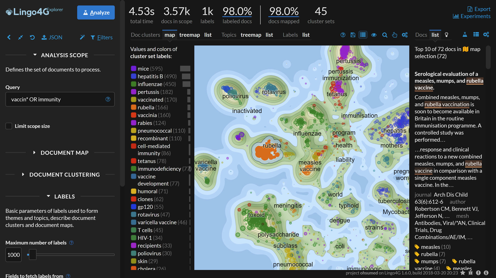
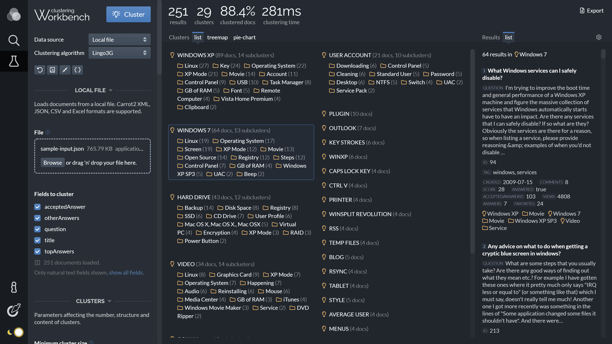
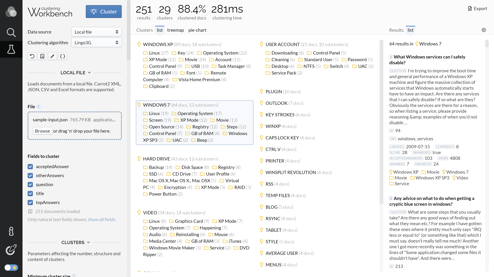

Use plain, semantic HTML to write your documentation. APIdocs will take care
of ToC generation, code highlighting, image processing and full-text search.
Page outline
Below is the outline of a typical APIdocs page.
Page title
Introduction.
Section 1
Section 1 content.
Section 1.1
The outline of a typical APIdocs HTML page source.
Here are some rules about the structure of page HTMLs:
In most cases, each APIdocs page will be an article covering a
specific aspect of your software.
The root element of each page HTML file must be an HTML
article.
Each article must have a child h1 element
containing the article's title. APIdocs will use its contents to refer
to the page in navigation links.
Use HTML section tags to divide your article into
sections. Put section titles in HTML heading tags (h2,
h3 etc.) inside the section tag. Do not use
heading tags outside of sections.
If you would like a section to appear in the per-article table of
contents, add an id attribute to that section.
Additionally, sections with id attributes will have their
heading submitted to the search index.
Text elements
Use typical HTML text elements as you'd normally do in a regular HTML
page. Use p to delimit paragraphs, ul and
ol for lists, ul for definition lists,
strong and em for emphasis.
Some notes regarding text elements:
The search index uses paragraphs as the basic indexing unit. Keeping
paragraphs short will not only make them easier to read, but also
improve the search experience.
Do not use strong and em tags outside of
paragraphs. Otherwise, their contents will not be indexed by the
search engine.
For lists with short entries, put the text directly in the
li tags. For lists with longer entries, put one or more
p paragraphs inside the li. Both variants
are handled by the search engine.
Links
Use HTML a tags to link to other pages of your documentation
or to external resources.
Use relative href attributes to link to other pages of
your documentation. APIdocs will rewrite such links to point to the
final page URLs.
Use img tags to embed images in your documentation. APIdocs
will turn each such element into a responsive image that scales to take
the whole width of the page. We will also generate optimized versions of
the image in different resolutions, so that the appropriate version can be
served depending on the user's device and viewport size.
Like with code examples, you can wrap an img tag in a
figure and provide a figcaption to have the
image described and treated specially in search results. Additionally,
images inside the figure tag, when clicked, will zoom-in for
full-screen viewing.
The following markup:

A 2d map visualization of 3.5k medical paper
abstracts related to vaccines produced by
Lingo4G and visualized by dotAtlas.
Textually-similar abstracts are clustered together
on the map. The panel on the right shows the top abstracts
lying in the map region described as measles
vaccine. Phases specific to the selected
map region are highlighted in the text of the abstract.
will render the following figure:
A 2d map visualization of 3.5k medical paper abstracts related to
vaccines produced by Lingo4G and visualized by dotAtlas.
Textually-similar abstracts are clustered together on the map. The
panel on the right shows the top abstracts lying in the map region
described as measles vaccine. Phases specific to the selected
map region are highlighted in the text of the abstract.
Light and dark theme
You can provide separate images to show for the light and dark theme.
To do this, include two img tags with light
and dark CSS classes. APIDocs will show one of the images
depending on the currently selected theme.
The following markup:


Lingo3G Clustering Workbench.
will render the following image. Change the documentation theme to see
the image change to match the new theme.
Lingo3G Clustering Workbench.
SVG
You can embed SVG images in your documentation by putting
the graphics in the in-line svg element. SVG
images inside the figure tag, when clicked, will zoom-in
for full-screen viewing.
Example SVG graphics.
Info boxes
Use a div with class name info to generate an
information box. A standalone strong tag can serve as the
heading of the warning.
Info in search results.
Warning boxes get a special icon when presented in search results. Type
info in the search box to find out.
Warnings
Use a div with class name warning to generate a
warning box. A standalone strong tag can serve as the heading
of the warning.
Warnings in search results.
Warning boxes get a special icon when presented in search results. Type
warning in the search box to find out.